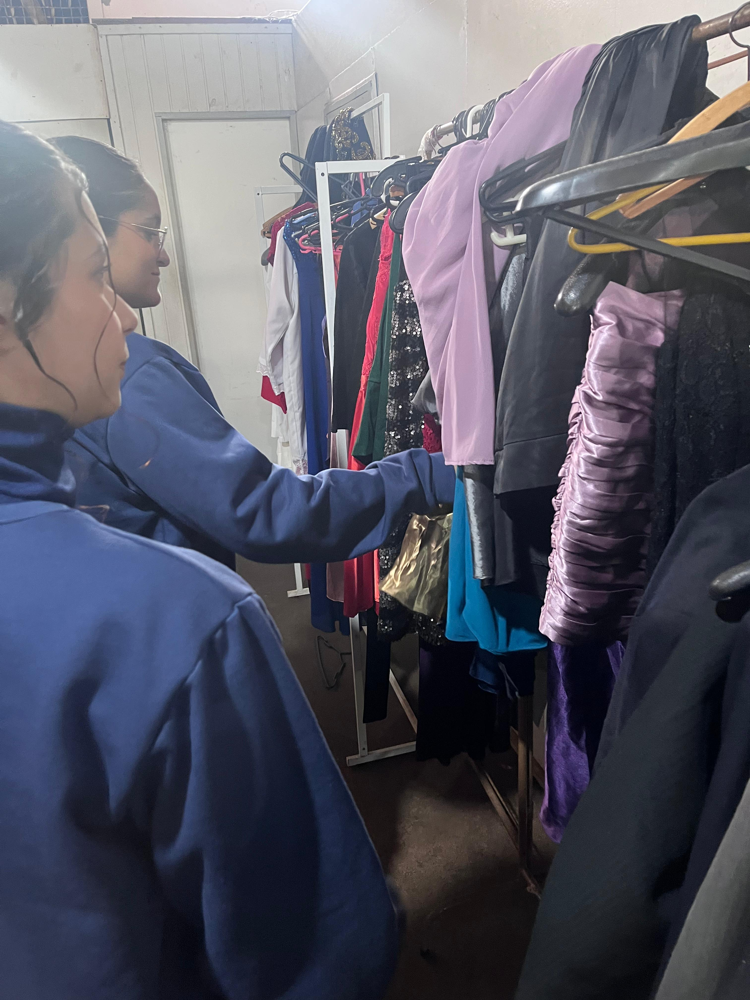
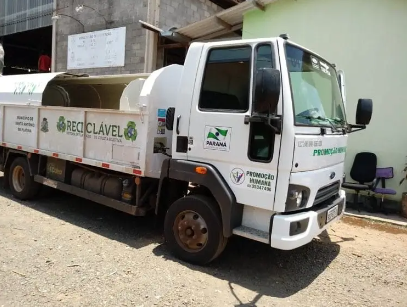
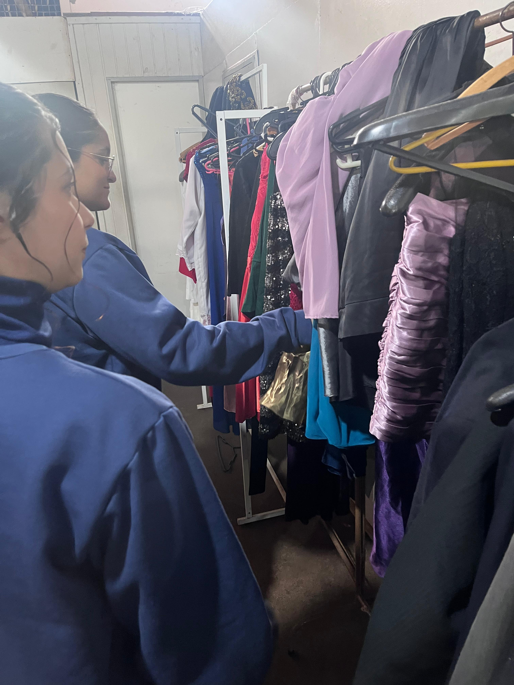
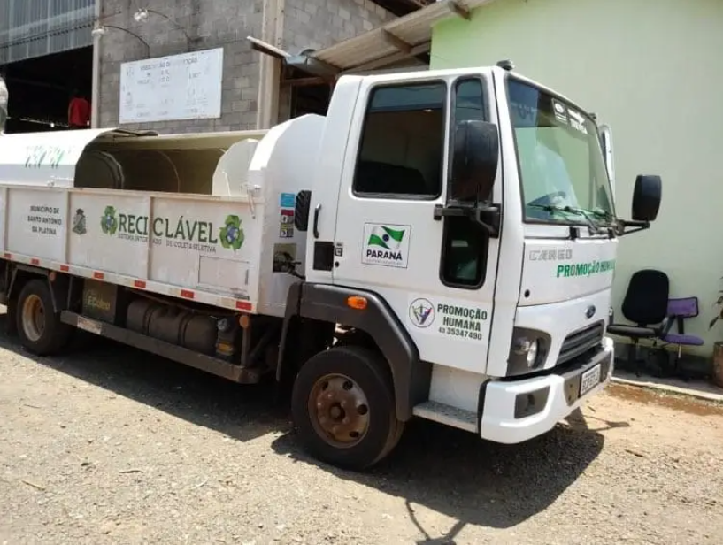
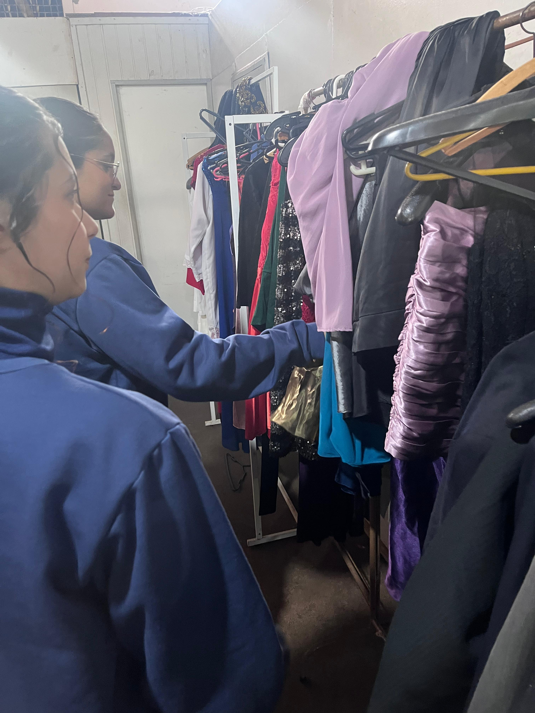
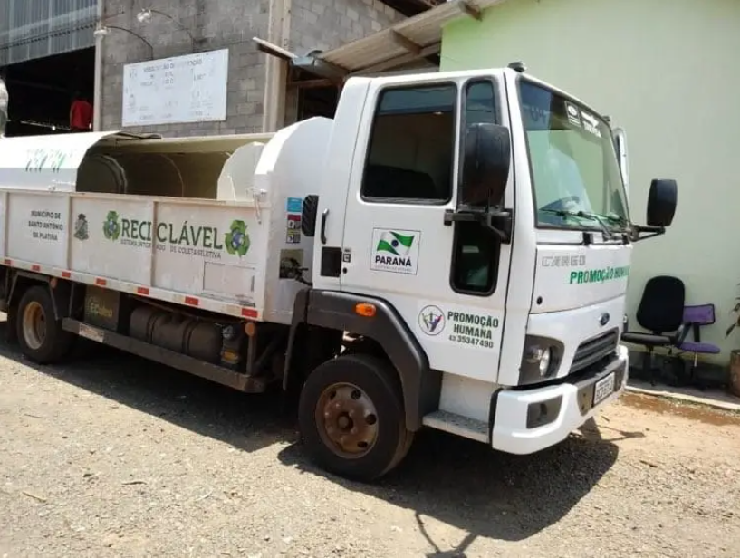

“O ideal da Promoção Humana é fazer o amor de Deus acontecer através da ação”
Quem Somos
A Promoção Humana é uma ONG que atua sem fins lucrativos, realizando a coleta seletiva e reciclagem de
resíduos
com responsabilidade social e ambiental, especialmente destinadas à famílias em situação de vulnerabilidade.
Com atuação desde 2000 na cidade de Santo Antônio da Platina - PR
Com uma equipe de aproximadamente 28 pessoas e vários voluntários, garantimos que toneladas de materiais
tenham o destino correto, gerando renda, trabalho e preservando o meio ambiente.
Contato
Telefone: (43) 3534-7490
Whatsapp: (43) 9 9800-4000
Nossa Missão
Conscientizar a população sobre a importância da separação correta do lixo reciclável, promover a inclusão
social e manter a cidade mais limpa e sustentável para todos.
Promover a sustentabilidade ambiental e a inclusão social por meio da reciclagem e do manejo adequado dos
resíduos sólidos. Buscamos reduzir o impacto do lixo no meio ambiente, conscientizar a população sobre a
importância da separação correta dos materiais e gerar oportunidades de trabalho e renda, principalmente
para catadores e comunidades em situação de vulnerabilidade.
Nossa organização também atua para fortalecer a economia circular, onde os materiais descartados são
reaproveitados como recursos, evitando desperdício e diminuindo a extração de matérias-primas da natureza.
Trabalhamos em parceria com a prefeitura, criando uma rede de apoio que une cuidado ambiental e
transformação social.
O que dizem sobre a Promoção Humana
"Desde que comecei a separar meu lixo, percebi a importância de cada atitude. A Promoção Humana faz um
trabalho incrível!"
– Maria Silva, moradora
"Além de ajudar o meio ambiente, a coleta seletiva gera renda e oportunidade para muitas famílias da
nossa cidade."
– João Oliveira, comerciante
"Fiquei feliz em ver meus filhos aprendendo sobre reciclagem nas escolas com o apoio da Promoção
Humana!"
– Carla Mendes, mãe e professora
“Meus pais não tinham o hábito de separar o lixo, mas conforme eu via a conscientização nas escolas
sobre a Promoção Humana e entendi a importância de separar corretamente o lixo, fui habituando eles
a fazer seus descartes de forma correta.”
- Ana Caroline Sabino, estudante
Galeria de Fotos


Cadastre-se para Participar da Coleta Seletiva
Ajude Santo Antônio da Platina a ficar mais limpa e sustentável! Clique no botão abaixo para preencher o
formulário oficial da Promoção Humana:


 


